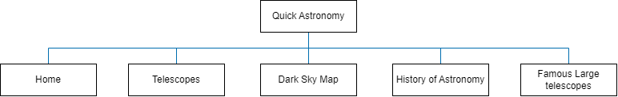

Client Project - Requirements and Design
Project name: Quick Astronomy
Project Overview:
- The purpose of this website is to introduce users with little to no knowledge of Astronomy to learn more about this subject
- The users of this website will likely be beginner stargazing enthusiasts and also those just curious about the subject
- This site will host 5 distinct pages. There will be a separate page for different kinds of telescopes, dark sky maps, human history in Astronomy, and famous large-scale telescopes
Client Information:
- Client name: Shane
- Institute: University of North Carolina at Charlotte
- Clients email and phone: classified
Website wireframe
Please note that this instruction has been excluded from the rubric.
Sitemap:
Page Design
Below is a description of each of the five pages in this project
- Home: The purpose of this page is to serve as a landing page and provide a brief introduction to astronomy. The intended audience is someone who is new to the hobby of stargazing and astronomy in general. It will have text content and one or two images.
- Telescopes: The purpose of this page is to introduce the user to different kinds of commercially available telescopes used for stargazing or sky observation. The audience here again is the beginner who does not know much difference between commercial telescopes. This page will host a table with descriptions and key differences.
- Dark Sky Map: The purpose of this page is to familiarize the user with the dark sky by providing a map with popular constellations. The audience here is anyone who would like to identify constellations and popular sky objects. The dynamic element will live here, which will allow names to appear when you hover your mouse over the objects.
- History: The purpose of this page is to give users a brief overview of astronomy throughout history. The audience is anyone who wants to know the history of astronomy. This will host a few sections talking about histrorical elements of astronomy.
- Famous Large Telescopes: The purpose of this page is to serve as a introduction and tribute to the two famous telescopes: Hubble and JWST. The audience here is anyone who wishes to learn more about large telescopes that were used to capture historic pictures of the observable universe.
Dynamic Functionality:
The dynamic functionality I aim to implement in this project is to create the dark sky map. This will allow the user to hover their mouse over a picture of the night sky and be able to get information about key objects such as the north star. Here are two examples: